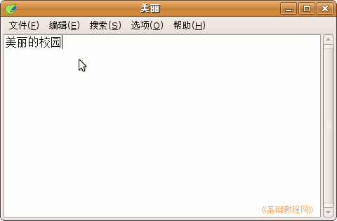

电脑操作基础
作者：TeliuTe 来源：基础教程网
二十三、leafpad 记事本 返回目录 下一课leafpad 和 mousepad 都是小巧的记事本程序，leafpad 的依赖软件包少些，下面我们来看一个练习；
1、安装 leafpad
1）点菜单 “系统－系统管理－新立得软件包管理器”，进入窗口后搜索 leafpad；

2）安装完以后，点菜单“应用程序－附件－leafpad”，就可以打开它，也可以点右键“添加到面板”；
2、使用 leafpad
1）leafpad 的窗口非常简单，只有菜单栏和窗口工作区；
2）窗口最上面是标题栏，文件还没保存，显示的是“无标题”，保存以后就显示文件名；
3）调出汉字输入法，输入“美丽的校园”，点“文件－保存”命令，保存文件名为 美丽；

4）leafpad 不能保存 ANSI 编码的文件，因此一些在 DOS 下编辑的文件，用leafpad保存后，编码会改变；
本节学习了在Ubuntu中的 leafpad 基本操作，如果你成功地完成了练习，请继续学习下一课内容；本教程由86团学校TeliuTe制作|著作权所有，商业用途请与作者联系
基础教程网：http://teliute.org/
美丽的校园……
转载和引用本站内容，请保留版权信息和本站链接。